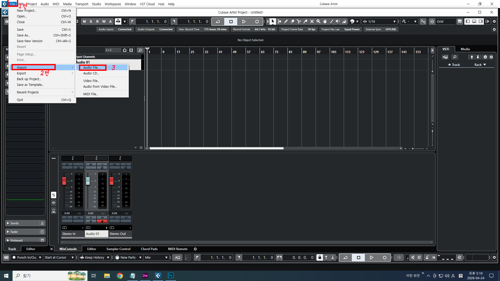
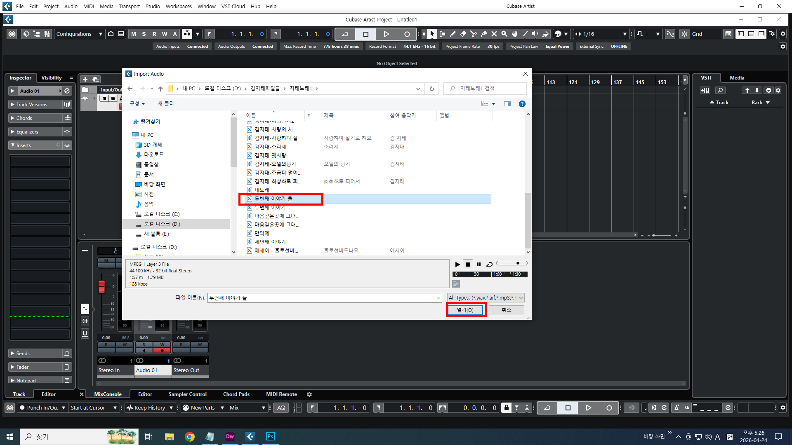
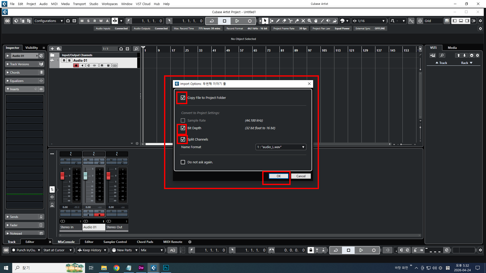
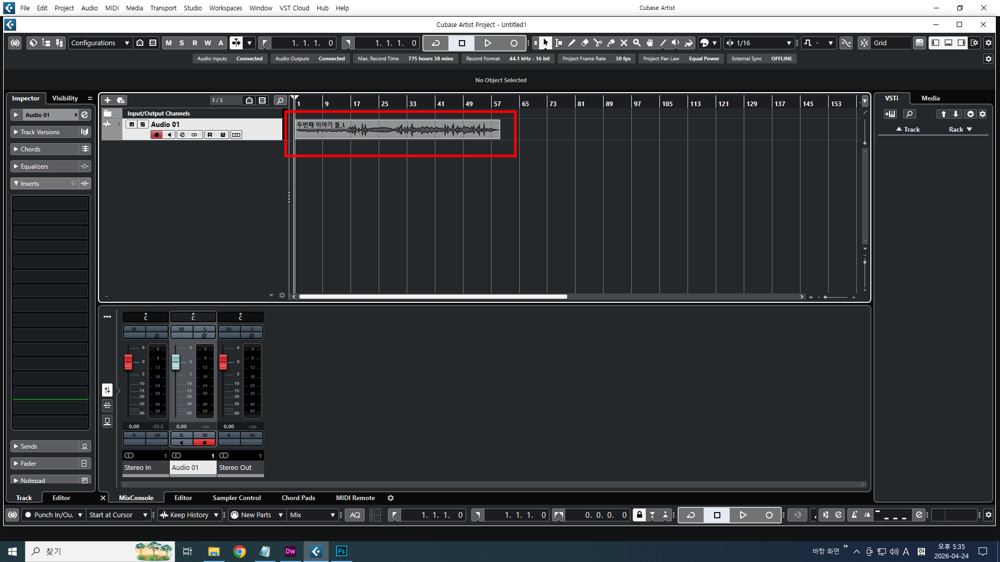
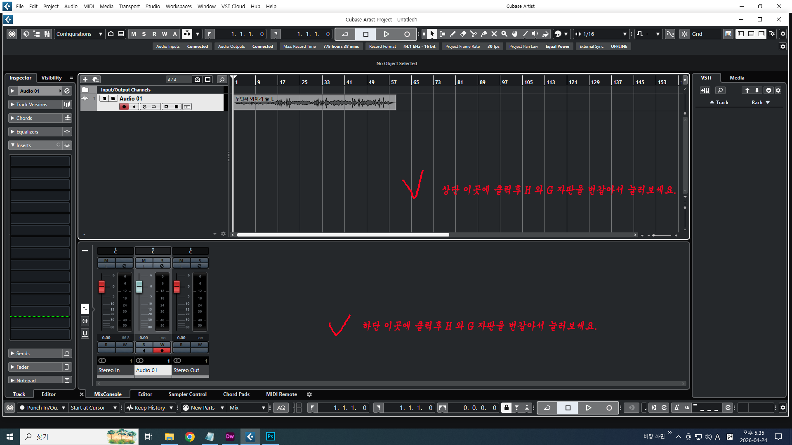

큐베이스에서 오디오 파일을 불러오는 방법은
아래 이미지와 같이 따라 하시면 됩니다.
큐베이스 상단의 메뉴들중에 가장 앞쪽에 있는
File 메뉴를 클릭하면 하위메뉴가 보입니다.
그중에서 Import(가져오기) 하위메뉴중에서 Audio File 클릭합니다.
오디오파일이 들어있는 내 컴퓨터 드라이브를 찾아갑니다.
그래서 열고자 하는 오디오파일이 위치한 드라이브에서
원하는 파일을 선택한후 열기를 클릭합니다.
새로운 창이 하나 열리면서 체크항목이 보입니다.
아래 그림처럼 빨간 부분만 체크 하시고 OK 누르세요.
중요한 내용이 포함된거 아니니까 모르셔도 아무 문제 없습니다.
최종적으로 오디오파일이 불러와졌습니다(아래 이미지참조)
알려드리겠습니다.
작업을 원활하게 하기위해서 오디오 파형의 크기를 더 크게 ,더 넓게해서
보고 싶을때 아래 이미지와 같은 방식으로 한번 작동해보세요.
이미지 내용대로 작동해보면 금방 어떤 의미인지 이해가 되실겁니다.
상단 영역에 클릭후 키보드 자판에서 영문으로 (중요함) H를 두세번
연속으로 터치 해보시면서 큐베이스 화면의 오디오파일이 어떤
변화가 생기는지 눈여겨 보세요.충분히 이해 되실겁니다.
그리고 역시 하단에도 같은 방식으로 해보면 어떤 변화가
생기는지 알수 있습니다.
작업 영역을 확대하는 방법입니다.
이제는 그냥 H와 G 만 누르지 마시고
이번에는 상단 영역에서 SHIFT + H 와 SHIFT + G 를 눌러보세요.
그러면 또한 어떤 변화가 생기는지 눈여겨 보세요.
이상으로 작업영역의 확장과 축소를 할수 있는 방식입니다.
실제 작업을 하다보면 상당히 자주 사용하게되는 부분이니
익혀서 손에 익혀두세요.
다음 강좌에 불러온 오디오파일로 여러가지 작업을,
해보도록 하겠습니다.

아래 이미지와 같이 따라 하시면 됩니다.
큐베이스 상단의 메뉴들중에 가장 앞쪽에 있는
File 메뉴를 클릭하면 하위메뉴가 보입니다.
그중에서 Import(가져오기) 하위메뉴중에서 Audio File 클릭합니다.

그래서 열고자 하는 오디오파일이 위치한 드라이브에서
원하는 파일을 선택한후 열기를 클릭합니다.

아래 그림처럼 빨간 부분만 체크 하시고 OK 누르세요.
중요한 내용이 포함된거 아니니까 모르셔도 아무 문제 없습니다.


불어와진 오디오 파일에 대해서 이것 저것 조정을 필요한 부분을알려드리겠습니다.
작업을 원활하게 하기위해서 오디오 파형의 크기를 더 크게 ,더 넓게해서
보고 싶을때 아래 이미지와 같은 방식으로 한번 작동해보세요.
이미지 내용대로 작동해보면 금방 어떤 의미인지 이해가 되실겁니다.
상단 영역에 클릭후 키보드 자판에서 영문으로 (중요함) H를 두세번
연속으로 터치 해보시면서 큐베이스 화면의 오디오파일이 어떤
변화가 생기는지 눈여겨 보세요.충분히 이해 되실겁니다.
그리고 역시 하단에도 같은 방식으로 해보면 어떤 변화가
생기는지 알수 있습니다.
작업 영역을 확대하는 방법입니다.
이제는 그냥 H와 G 만 누르지 마시고
이번에는 상단 영역에서 SHIFT + H 와 SHIFT + G 를 눌러보세요.
그러면 또한 어떤 변화가 생기는지 눈여겨 보세요.
이상으로 작업영역의 확장과 축소를 할수 있는 방식입니다.
실제 작업을 하다보면 상당히 자주 사용하게되는 부분이니
익혀서 손에 익혀두세요.

해보도록 하겠습니다.
닫기 ×